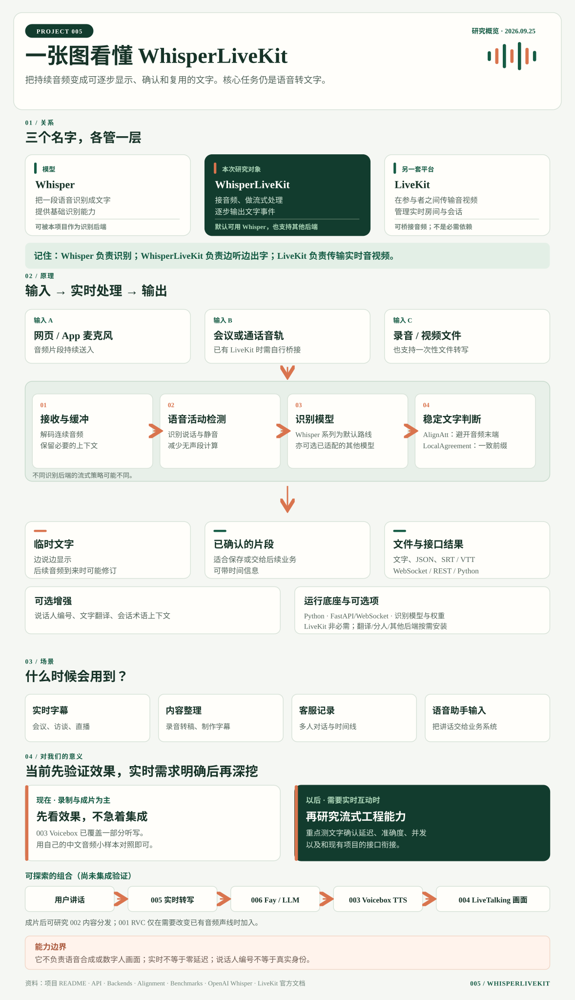

01
Whisper
识别模型
给它一段语音，它判断说了什么，输出文字。它是识别能力的来源。
相当于 “听写的大脑”
WHISPERLIVEKIT / EXPLAINED
WhisperLiveKit 是一个可自行部署的实时语音转文字服务。它持续接收音频，调用 Whisper 等识别模型，一边听一边输出可更新的文字；还可加入说话人区分与翻译。
02 / OVERVIEW
先读摘要，再看我们生成的完整引导图；后文逐项展开。

识别模型
给它一段语音，它判断说了什么，输出文字。它是识别能力的来源。
实时处理服务
接收不断到来的音频，组织识别、确认文字，并通过接口实时发给你的网页或应用。
实时音视频平台
负责把人和设备的声音、画面实时传送到会议或应用中的其他参与者。
关系：WhisperLiveKit 默认可使用 Whisper 系列模型，但也支持其他识别后端。它本身有音频接入接口，不要求先使用 LiveKit。若你的项目已有 LiveKit 会议，可以把会议音频接给 WhisperLiveKit 生成字幕，中间需要自行做音频桥接。
依据 [3][4][8][9]03 / CAPABILITIES
从音频进入，到文字可被显示或交给其他系统。
音频边到，文字边出；区分尚可变化的临时结果与已确认结果。
处理已有音频，导出纯文本、JSON 或 SRT / VTT 字幕。
给文字片段标记说话人编号，帮助整理多人对话。
识别原文后输出目标语言文字，用于跨语言字幕和理解。
提供原生 WebSocket、Python 接口和部分兼容的常见转写接口。
按语言、设备和时延要求选择 Whisper 系列或其他已支持模型。
“说话人区分”输出的是编号，并不自动知道真实姓名；接口兼容是功能子集，不能假定所有第三方参数都可用。 依据 [3] [5]
04 / HOW IT WORKS
普通识别模型更擅长处理相对完整的音频；实时服务必须决定什么时候可以放心显示和确认文字。
浏览器或应用把音频分批送入服务，再转换为 16 kHz 单声道音频；已有文件也可以直接转写。
系统一边接收语音，一边运行识别并更新候选文字。停顿是语音边界和句尾收尾的信号；文字能否正式确认，还要看识别结果是否足够稳定。
Silero VAD 根据音频判断说话开始与结束。它帮助跳过静音、记录时间位置，但不负责辨认文字。
说话中的音频块进入缓存后，处理器持续调用 ASR；也可以先合并一些音频，减少模型调用。连续讲话时同样会出字。
默认 AlignAtt 策略暂缓靠近当前音频末尾的词；可选 LocalAgreement 比较前后两次识别的一致前缀。未确认的尾部文字仍可能修订。
检测到静音会通知识别器处理句尾；默认超过 5 秒的停顿结束后形成稳定段落边界，音频结束时也会提交剩余内容。5 秒不是开始识别的等待时间。
“我想预订……明天的车票”：说到“我想预订”时，界面就可能显示暂定文字；后面的音频进入后，末尾可被修正并逐步确认。中间的短暂停顿帮助发现边界，却不要求说完整句才开始转写。
例如先听到“我们今天订……”，下一秒才知道后面是“机票”还是“会议室”。WhisperLiveKit 会保留临时结果，再按实时策略确认稳定内容。
界面可以显示两者；保存记录或触发业务动作时，优先使用已确认文字。
依赖随识别后端和可选功能变化，下面区分基础服务与按需扩展。
项目声明 Python ≥3.11、<3.14；FastAPI、Uvicorn、WebSockets 负责提供网页、API 与实时连接。
基础依赖含 librosa、soundfile、PyTorch、faster-whisper；Silero VAD 辅助语音检测。实际识别还需要所选后端的模型权重。
压缩音频等非 PCM 输入需要 FFmpeg 解码；CPU 或 GPU 需求取决于模型、后端、延迟和并发目标。
翻译、说话人区分、MLX 或其他识别后端有各自依赖。LiveKit 不在该库的必需依赖中，接会议音频需另做桥接。
本网页只是静态研究导读；部署到 GitHub Pages 不会运行识别服务。依赖清单 [9] · 后端说明 [8] · 运行说明 [1]
语音检测、模型调用、文字确认和段落分界是不同的判断.上面的具体流程依据 [10] 处理器源码、[11] VAD 源码、[12] AlignAtt 实现、[13] LocalAgreement 实现；Whisper 的模型结构见 [14]。不同后端可能使用各自的流式策略。
05 / USE CASES
选择一个场景，看看它负责哪一段，以及你还需要接上什么。
让参与者在讲话过程中看到字幕，结束后留下可整理的文字记录。
持续识别、输出临时与已确认文字；可选说话人编号。
音频来源、字幕界面、会议记录保存与权限。
06 / EXTEND
把语音文字当作产品的输入，后续能力由你的业务场景决定。
为产品名、人名、行业词提供上下文；比较已支持的识别后端在你自己的音频上的表现。
把已确认的文字交给大模型，生成会议摘要、待办事项或可检索的知识记录。
从网页、桌面端或现有会议系统获取音频，再把字幕或事件送回产品界面。
围绕延迟、错误、资源占用和连接数做容量测试，再决定部署方式。
这些是扩展方向；摘要、问答、业务流程和音频桥接需要额外实现。现有接口支持按会话传入术语上下文，但并非所有后端均支持。 依据 [3]
07 / YOUR PROJECT
先判断当前是否需要实时转写，再看它能怎样接到已有项目。
如果主要工作是录制口述、制作配音和成片，003 Voicebox 已覆盖一部分听写需求。此时看一次演示、用自己的中文音频试转写效果，就足以判断是否值得保留。只有出现直播字幕、多人会议记录或数字人实时对话需求时，才值得深入研究它的流式确认、延迟和系统接入。
这时它能把“用户正在讲话”变成可交给交互系统的文字；下面是一条可探索的组合路径。
若制作成片，可继续研究 002 内容分发；若要改变已有音频的声线，可另看 001 RVC 换声。这是一条可探索路径，尚未验证跨项目集成。
研究价值在哪里：003 已有本地 Whisper 听写。若只处理录音，005 的新增价值有限；若做实时互动，值得研究的是持续音频、临时与确认结果、延迟及产品接口，而不是再研究一遍 Whisper 模型本身。
把麦克风音频发送到它的 WebSocket；用临时文字更新界面，用已确认文字保存记录或交给后续流程。
选型结论：当前把它当作可试用的候选工具即可。未来只有在“边说边出字”、多人字幕或实时数字人交互成为明确需求时，再投入集成与性能研究。
08 / DECISION
这比只看首页的模型速度图更能回答“适不适合我的项目”。
准备几段真实音频：安静、嘈杂、多人交谈各一段。
先跑基础转写，再按需要打开翻译或说话人区分。
记录中文错字率、首字出现时间、文字确认时间及设备占用。
在目标设备上测试并发，确认延迟是否仍可接受。
实时不是零延迟。更大的模型、更复杂的翻译和多人说话，都会影响体验。
选型时看自己的音频和设备09 / REFERENCES
内容依据项目仓库、官方文档和所用技术的原始说明整理；扩展建议已在正文中注明。
核对日期：2026 年 9 月 25 日 · 项目持续更新，实际能力以所部署版本的文档为准。